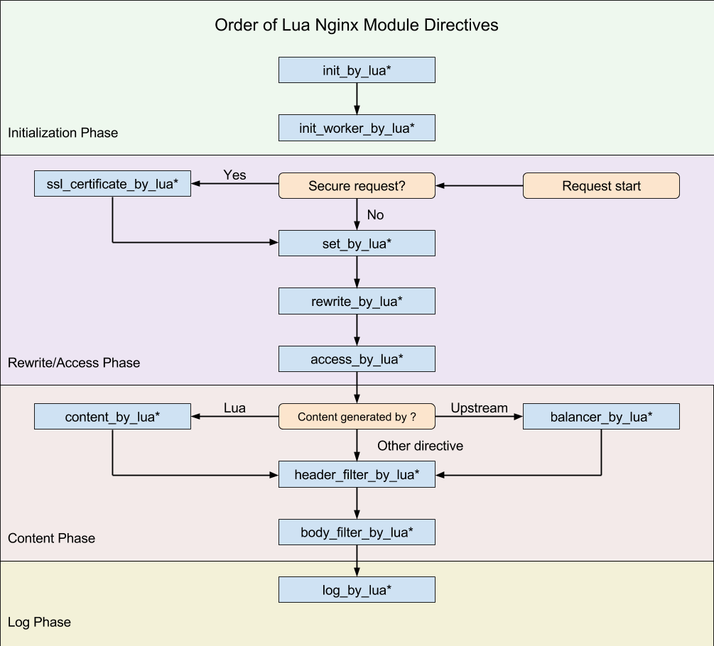

- 00 开篇词 OpenResty，为你打开高性能开发的大门.md
- 01 初探OpenResty的三大特性.md
- 02 如何写出你的“hello world”？.md
- 03 揪出隐藏在背后的那些子项目.md
- 04 如何管理第三方包？从包管理工具luarocks和opm说起.md
- 05 [视频]opm项目导读.md
- 06 OpenResty 中用到的 NGINX 知识.md
- 07 带你快速上手 Lua.md
- 08 LuaJIT分支和标准Lua有什么不同？.md
- 09 为什么 lua-resty-core 性能更高一些？.md
- 10 JIT编译器的死穴：为什么要避免使用 NYI ？.md
- 11 剖析Lua唯一的数据结构table和metatable特性.md
- 12 高手秘诀：识别Lua的独有概念和坑.md
- 13 [视频]实战：基于FFI实现的lua-resty-lrucache.md
- 14 答疑（一）：Lua 规则和 NGINX 配置文件产生冲突怎么办？.md
- 15 OpenResty 和别的开发平台有什么不同？.md
- 16 秒杀大多数开发问题的两个利器：文档和测试案例.md
- 17 为什么能成为更好的Web服务器？动态处理请求和响应是关键.md
- 18 worker间的通信法宝：最重要的数据结构之shared dict.md
- 19 OpenResty 的核心和精髓：cosocket.md
- 20 超越 Web 服务器：特权进程和定时任务.md
- 21 带你玩转时间、正则表达式等常用API.md
- 22 [视频]从一个安全漏洞说起，探寻API性能和安全的平衡.md
- 23 [视频]导读lua-resty-requests：优秀的lua-resty-_是如何编写的？.md
- 24 实战：处理四层流量，实现Memcached Server.md
- 25 答疑（二）：特权进程的权限到底是什么？.md
- 26 代码贡献者的拦路虎：test__nginx 简介.md
- 27 test__nginx 包罗万象的测试方法.md
- 28 test__nginx 还可以这样用？.md
- 29 最容易失准的性能测试？你需要压测工具界的“悍马”wrk.md
- 30 答疑（三）如何搭建测试的网络结构？.md
- 31 性能下降10倍的真凶：阻塞函数.md
- 32 让人又恨又爱的字符串操作.md
- 33 性能提升10倍的秘诀：必须用好 table.md
- 34 特别放送：OpenResty编码指南.md
- 35 [视频]实际项目中的性能优化：ingress-nginx中的几个PR解读.md
- 36 盘点OpenResty的各种调试手段.md
- 37 systemtap-toolkit和stapxx：如何用数据搞定“疑难杂症”？.md
- 38 [视频]巧用wrk和火焰图，科学定位性能瓶颈.md
- 39 高性能的关键：shared dict 缓存和 lru 缓存.md
- 40 缓存与风暴并存，谁说缓存风暴不可避免？.md
- 41 lua-resty-_ 封装，让你远离多级缓存之痛.md
- 42 如何应对突发流量：漏桶和令牌桶的概念.md
- 43 灵活实现动态限流限速，其实没有那么难.md
- 44 OpenResty 的杀手锏：动态.md
- 45 不得不提的能力外延：OpenResty常用的第三方库.md
- 46 答疑（四）：共享字典的缓存是必须的吗？.md
- 47 微服务API网关搭建三步曲（一）.md
- 48 微服务API网关搭建三步曲（二）.md
- 49 微服务API网关搭建三步曲（三）.md
- 50 答疑（五）：如何在工作中引入 OpenResty？.md
- 结束语 行百里者半九十.md
25 答疑（二）：特权进程的权限到底是什么？
你好，我是温铭。
专栏更新到现在，OpenResty第二版块 OpenResty API 篇，我们就已经学完了。恭喜你没有掉队，仍然在积极学习和实践操作，并且热情地留下了你的思考。
很多留言提出的问题很有价值，大部分我都已经在App里回复过，一些手机上不方便回复的或者比较典型、有趣的问题，我专门摘了出来，作为今天的答疑内容，集中回复。另一方面，也是为了保证所有人都不漏掉任何一个重点。
下面我们来看今天的这 6 个问题。
第一问，特权进程的权限
Q：我想请问下，特权进程是怎么回事，如果启动 OpenResty 的本身就是普通用户，如何获取root权限呢？另外，老师可以介绍下，特权进程的使用场景有哪些吗？
A：其实，特权进程的权限和 master 进程的权限保持一样。如果你用普通用户身份启动 OpenResty，那么 master 就是普通用户的权限，这时候特权进程也就没有什么特权了。
这一点应该还是很好理解的，普通用户启动的进程，无论如何也不会有 root 权限。
至于特权进程的使用场景，我们一般用特权进程来处理的是清理日志、重启 OpenResty 自身等需要高权限的任务。你需要注意的是，不要把 worker 进程的任务交给特权进程来处理。这并非因为特权进程不能做到，而是其存在安全隐患。
我见到过一个开发者，他把定时器的任务都交给了特权进程来处理。他为什么这么做呢？因为特权进程只有一个，这样 timer 就不会重复启动。
是不是觉得这看上去很聪明呀，不用 worker.id 这种笨方法就做到了。但是，别忘了，如果定时器的任务和用户的输入有关，这不就等于留了一个后门吗？显然是非常危险的。
第二问，阶段和调试
Q：老师，是不是无论在哪个阶段运行ngx.say('hello')，OpenResty都会在执行完本阶段的剩余代码后，直接响应给客户端，而不会继续执行其他阶段了呢？我测试出来是这样的。
A：事实上并非如此，我们可以来看下它的执行阶段的顺序图：

你可以做个测试，先在 content 里面 ngx.say；然后，在 log 或者 body filter 阶段使用 ngx.log 来打印下日志试试。
在专栏中，我并没有专门提到在 OpenResty 中做代码调试的问题，这也是开发者经常困惑的地方，我正好顺着这个问题在答疑中聊一下。
其实，OpenResty 中的代码调试，并没有断点这些高级功能（相应有一些付费的插件，但我并没有使用过），只能用 ngx.say 和ngx.log 来看输出。我知道的开发者，包括 OpenResty 的作者和贡献者们，都是这样来做 debug 的。所以，你需要有强有力的测试案例和调试日志来作为保证。
第三问，ngx.exit 和动手实验
Q：老师，文中的这句话，“OpenResty 的 HTTP 状态码中，有一个特别的常量：ngx.OK。当 ngx.exit(ngx.OK) 时，请求会退出当前处理阶段，进入下一个阶段，而不是直接返回给客户端。”
我记得，ngx.OK应该不能算是HTTP状态码，它对应的值是0。我的理解是：
ngx.exit(ngx.OK)、ngx.exit(ngx.ERROR)和ngx.exit(ngx.DECLINED)时，请求会退出当前处理阶段，进入下一个阶段；- 而当
ngx.exit(ngx.HTTP_*)以ngx.HTTP_*的各种HTTP状态码作为参数时，会直接响应给客户端。
不知道这样想对不对呢？
A：关于你的第一个问题，ngx.ok 确实不是http状态码，它是 OpenResty 中的一个常量，值是0。
至于第二个问题，ngx.exit 的官方文档其实正好可以解答：
When status >= 200 (i.e., ngx.HTTP_OK and above), it will interrupt the execution of the current request and return status code to nginx.
When status == 0 (i.e., ngx.OK), it will only quit the current phase handler (or the content handler if the content_by_lua* directive is used) and continue to run later phases (if any) for the current request.
不过，文档里并没有提到， OpenResty对于ngx.exit(ngx.ERROR)和ngx.exit(ngx.DECLINED)是如何处理的，我们可以自己来做个测试，比如下面这样：
location /lua {
rewrite_by_lua "ngx.exit(ngx.ERROR)";
echo hello;
}
显然，访问这个 location，你可以看到 http 响应码为空，响应体也是空，并没有进入下一个执行阶段。
其实，还是那句话，在 OpenResty 的学习过程中，随着你逐步深入，一定会在某个阶段发现，文档和测试案例都无法回答你的问题。这时候，就需要你自己构建测试案例来验证你的想法了。你可以手动测试，也可以添加在 test::nginx 搭建的测试案例集里面。
第四问，变量和竞争
Q：老师，你好，我有下面几个问题想请教一下。
- 前面讲过，
ngx.var变量的作用域在nginx C和lua-nginx-module模块之间。这个我不太理解，从请求的角度来看，是指一个工作进程中的单个请求吗？ - 我的理解是，在我们操作模块内的变量时，如果两个操作之间有阻塞操作，可能会出现竞争。那么，如果两个操作之间没有阻塞操作，恰好CPU时间到了后，当前进程进入就绪队列，这样可能产生竞争吗？
A：我们依次来看这几个问题。
第一，关于ngx.var 变量的问题，你的理解是正确的。实际上，ngx.var 的生命周期和请求一致，请求结束它也就消失了。但它的优势，是数据可以在 C 模块和 Lua 代码中传递。这是其他几种方式都无法做到的。
第二，关于变量竞争的问题，其实，只要两个操作之间有 yield 操作，就可能出现竞争，而不是阻塞操作；有阻塞操作时是不会出现竞争的。换句话说，只要你不把主动权交给 Nginx 的事件循环，就不会有竞争。
第五问，共享字典操作是否需要加锁呢？
Q：老师，如果多个worker并发存储数据，是不是需要加锁呢？比如下面这个例子：
resty --shdict 'dogs 10m' -e 'local dogs = ngx.shared.dogs
local lock= ngx.xxxx.lock
lock.lock()
dogs:set("Jim", 8)
lock.unlock()
local v = dogs:get("Jim")
ngx.say(v)
'
A：其实这里不用你自己加锁，共享字典（shared dict）的操作都是原子性的，不管是 get 还是 set。这种类似加锁的处理，OpenResty已经帮你考虑到了。
第六问，OpenResty 中如何更新时间？
Q：ngx.now()取时间，是发生在resume函数恢复堆栈阶段吗？
A：Nginx 是以性能优先作为设计理念的，它会把时间缓存下来。这一点，我们从 ngx.now 的源码中就可以得到印证：
static int
ngx_http_lua_ngx_now(lua_State *L)
{
ngx_time_t *tp;
tp = ngx_timeofday();
lua_pushnumber(L, (lua_Number) (tp->sec + tp->msec / 1000.0L));
return 1;
}
可以看出，ngx.now()这个获取当前时间函数的背后，隐藏的其实是 Nginx 的 ngx_timeofday 函数。而ngx_timeofday 函数，其实是一个宏定义：
#define ngx_timeofday() (ngx_time_t *) ngx_cached_time
这里ngx_cached_time 的值，只在函数 ngx_time_update 中会更新。
所以，这个问题就简化成了， ngx_time_update什么时候会被调用？如果你在 Nginx 的源码中去跟踪它的话，就会发现， ngx_time_update 的调用都出现在事件循环中，这个问题也就明白了吧。
通过这个问题你应该也能发现，开源项目的好处就是，你可以根据蛛丝马迹，在源码中寻找答案，颇有一种破案的感觉。
今天主要解答这几个问题。最后，欢迎你继续在留言区写下你的疑问，我会持续不断地解答。希望可以通过交流和答疑，帮你把所学转化为所得。也欢迎你把这篇文章转发出去，我们一起交流、一起进步。
© 2019 - 2023 Liangliang Lee. Powered by gin and hexo-theme-book.